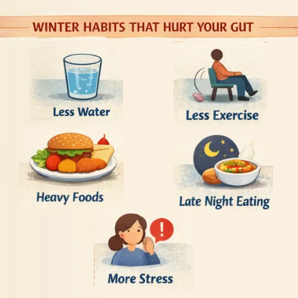
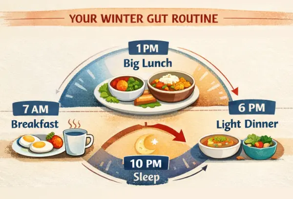
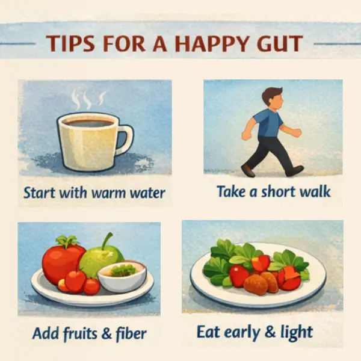

Kolkata winters aren’t “North-India cold,” but they can still hit your body hard—especially your digestive system.
When mornings turn foggy, routines change: we drink less water, move less, eat heavier foods, and delay meals. That combination is exactly what pushes many people into acidity, constipation, bloating, and unpredictable hunger.
Below is a practical, Kolkata-friendly guide to keep your gut calm through winter.
Why winter messes with digestion (the real reasons)
Most “winter gut problems” are not because cold air directly damages the stomach—they happen because winter changes your habits:
- Less water intake → harder stools + constipation
- Less walking/exercise → slower bowel movement
- More tea/coffee + spicy/fried snacks → acidity + bloating
- Late dinners + sleeping soon after eating → reflux at night
- More stress + irregular timings → gas, fullness, appetite swings
Constipation, for example, is strongly linked to low fiber, dehydration, and low physical activity—all common in winter. NIDDK+1

Winter Acidity (Heartburn/GERD): why it spikes in Kolkata
Common winter triggers
- Extra tea/coffee to “warm up”
- Fried snacks, heavy dinners, rich gravies
- Late-night eating, then lying down soon after
What actually works (simple)
- Don’t lie down after meals (give your stomach time).
- Avoid frequent triggers like caffeine, carbonated drinks, fatty/spicy foods if they worsen you.
- Eat slower, smaller portions; keep dinner lighter.
These are standard reflux prevention steps recommended by major medical sources. Mayo Clinic+2MedlinePlus+2
Quick winter tip: If acidity hits mostly at night, try early dinner (2–3 hours before sleep) and elevate your head slightly while sleeping (wedge/pillow support).
Winter Constipation: the Kolkata pattern
Constipation usually increases when:
- You drink less water
- You reduce fruits/vegetables
- You move less (shorter walks, more sitting)
The NIDDK lists low fiber, dehydration, and low activity among common causes—and also recommends fiber + fluids + regular activity as key steps. NIDDK+1
Kolkata-friendly fixes (doable)
- Start the day with warm water (plain or with a squeeze of lemon if it suits you).
- Add 1–2 high-fiber items daily:
- guava, papaya, orange, oats, dal, chana, vegetables
- Walk 10–15 minutes after lunch (even inside the house/office corridor).
- Keep a fixed toilet time (don’t ignore the urge).
Important: Increase fiber slowly, or you may feel more gas/bloating initially.
Winter Bloating & Gas: why your belly feels tight
Bloating is most commonly due to gas, often from:
- swallowing air while eating fast
- constipation
- certain foods/drinks (including fizzy drinks)
- food intolerance or IBS in some people nhs.uk
What helps fast
- Slow down meals (less air swallowing).
- Reduce “double trouble” meals: heavy + late + spicy/fried together.
- If you’re constipated, treat that first—bloating often improves once stools pass regularly. nhs.uk+1
- Take a short walk after eating (simple but underrated).

Appetite swings in winter: why you crave more (and then feel worse)
Many people notice:
- More hunger/cravings (especially evenings)
- Preference for carbs, fried foods, sweets
- Less appetite in the morning, then overeating later
This often becomes a cycle: heavy snack → acidity/bloating → poor sleep → more cravings next day.
A simple appetite stabilizer plan
- Protein in breakfast (eggs/curd/paneer/daal-based options)
- Lunch as the biggest meal
- Early, light dinner
- Keep a planned evening snack (so you don’t end up with random fried items)

A 1-day Kolkata Winter Gut Routine (easy template)
Morning
- Warm water + light stretching
- Breakfast: protein + fiber (curd + fruit / eggs + toast / oats)
Afternoon
- Lunch: rice/roti + dal + vegetables
- 10–15 min walk
Evening
- Planned snack: fruit/roasted chana/handful nuts
- Dinner early + lighter than lunch
Night
- Avoid lying down immediately after dinner
- Keep sleep consistent
When to NOT self-manage (see a GI specialist)
Get medical help if you have:
- Persistent acidity > 2–3 weeks, or trouble swallowing
- Severe abdominal pain, repeated vomiting
- Blood in stool / black stools
- Unexplained weight loss, fever, anemia symptoms
- Constipation lasting > 2 weeks despite routine changes
Closing note
Winter gut issues are common—but you shouldn’t “adjust” to daily discomfort. With small changes in timing, hydration, and food choices, most people feel better within a week. If symptoms are recurring or severe, a proper evaluation helps you avoid long-term complications.
Have a question this article does not answer?
Send us your reports. A specialist reviews them before you travel, so the first visit begins with a plan rather than a repeat test.